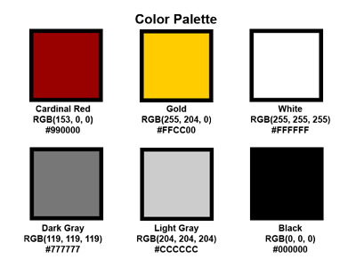
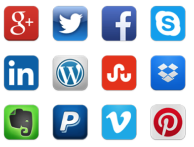
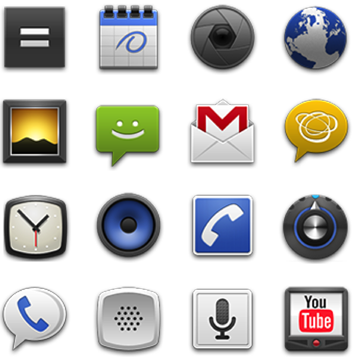

Create or choose a color palette:
- Pick the main colors for your app (may use other colors in your app)
- Pick colors that complement each other
- Pick colors that are representative of your app
- May pick colors that are different hues, but same saturation and brightness
Example: Color Palette for USC

Color Palette Resources
Color Palette in Photoshop
The app icon is the symbol of your app. Make it great! If art is not your thing, then hire a graphic designer.
Tips
- Use universal imagery that people will easily recognize
- Embrace simplicity
- Do not put the name of the app in the app icon
iOS-specific Tips
- Use square images (not rounded corners)
- Use a discernible background
- Do not use transparency
- Do not include a drop shadow
- Do not add any shine or gloss

Android-specific Tips
- Does not have to be square images
- Can use transparency for the outer edge
- Do not use inside tranparency
